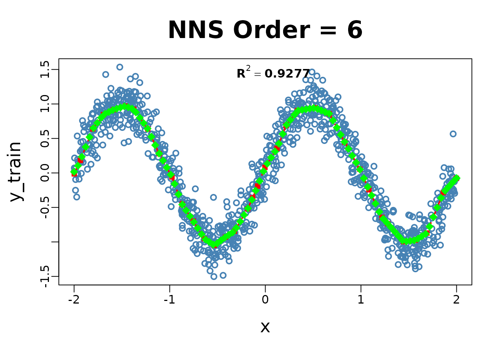
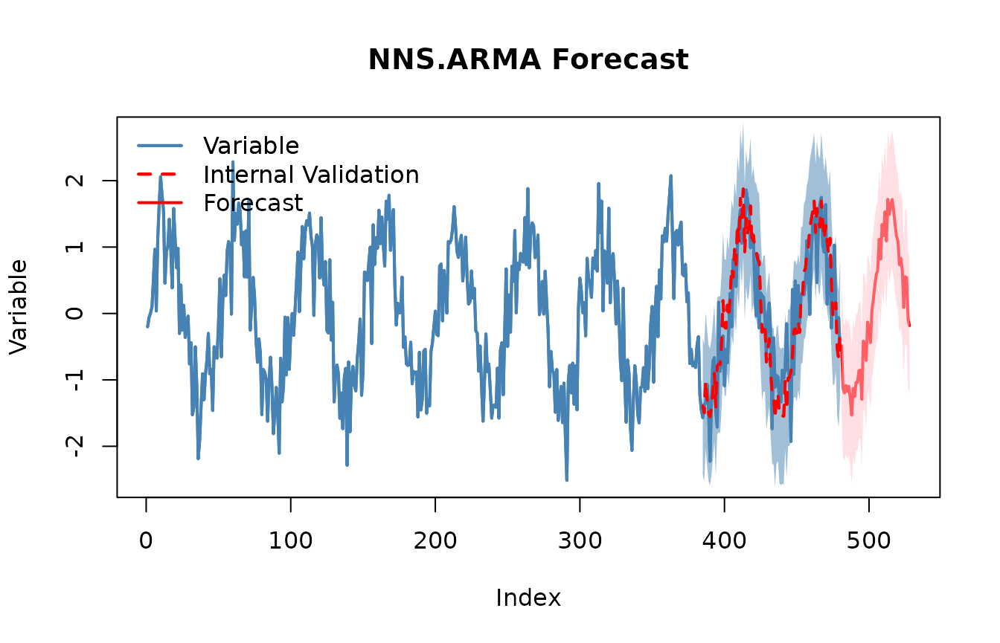

Getting Started with NNS: Overview
Fred Viole
Source:vignettes/NNSvignette_Overview.Rmd
NNSvignette_Overview.Rmd
# Prereqs (uncomment if needed):
# install.packages("NNS")
# install.packages(c("data.table","xts","zoo","Rfast"))
library(NNS)## Warning in rgl.init(initValue, onlyNULL): RGL: unable to open X11 display## Warning: 'rgl.init' failed, will use the null device.
## See '?rgl.useNULL' for ways to avoid this warning.Orientation
Goal. A complete, hands‑on curriculum for Nonlinear Nonparametric Statistics (NNS) using partial moments. Each section blends narrative intuition, precise math, and executable code.
Structure.
- Foundations — partial moments & variance decomposition
- Descriptive & distributional tools
- Dependence & nonlinear association
- Hypothesis testing & ANOVA (LPM‑CDF)
- Regression, boosting, stacking & causality
- Time series & forecasting
- Normalziation & Rescaling
- Simulation (max‑entropy) & Monte Carlo
- Portfolio & stochastic dominance
Notation. For a random variable and threshold/target , the population ‑th partial moments are defined as
The empirical estimators replace with the empirical CDF (or, equivalently, use indicator functions):
These correspond to integrals over the measurable subsets and in a ‑algebra; the empirical sums are discrete analogues of Lebesgue integrals.
1. Foundations — Partial Moments & Variance Decomposition
1.1 Why partial moments
- Classical variance treats upside and downside symmetrically. Partial moments separate them, allowing asymmetric risk/reward analysis around a chosen target (often the mean or a benchmark).
- At : This is not the same as splitting conditional variances around a threshold; partial moments use a global reference, preserving the between‑group contribution.
1.3 Code: variance decomposition & CDF
set.seed(42)
# Normal sample
y <- rnorm(3000)
mu <- mean(y)
L2 <- LPM(2, mu, y); U2 <- UPM(2, mu, y)
cat(sprintf("LPM2 + UPM2 = %.6f vs var(y)=%.6f\n", (L2+U2)*(length(y) / (length(y) - 1)), var(y)))## LPM2 + UPM2 = 1.011889 vs var(y)=1.011889
# Empirical CDF via LPM.ratio(0, t, x)
for (t in c(-1,0,1)) {
cdf_lpm <- LPM.ratio(0, t, y)
cat(sprintf("CDF at t=%+.1f : LPM.ratio=%.4f | empirical=%.4f\n", t, cdf_lpm, mean(y<=t)))
}## CDF at t=-1.0 : LPM.ratio=0.1633 | empirical=0.1633
## CDF at t=+0.0 : LPM.ratio=0.5043 | empirical=0.5043
## CDF at t=+1.0 : LPM.ratio=0.8480 | empirical=0.8480
# Asymmetry on a skewed distribution
z <- rexp(3000)-1; mu_z <- mean(z)
cat(sprintf("Skewed z: LPM2=%.4f, UPM2=%.4f (expect imbalance)\n", LPM(2,mu_z,z), UPM(2,mu_z,z)))## Skewed z: LPM2=0.2780, UPM2=0.7682 (expect imbalance)Interpretation. The equality
LPM2 + UPM2 == var(x) (Bessel adjustment used) holds
because deviations are measured against the global mean.
LPM.ratio(0, t, x) constructs an empirical CDF directly
from partial‑moment counts.
2. Descriptive & Distributional Tools
2.1 Higher moments from partial moments
Define asymmetric analogues of skewness/kurtosis using , (and degree 4), yielding robust tail diagnostics without parametric assumptions.
Header. NNS.moments(x)
M <- NNS.moments(y)
M## $mean
## [1] -0.0114498
##
## $variance
## [1] 1.011552
##
## $skewness
## [1] -0.007412142
##
## $kurtosis
## [1] 0.067237722.3 CDF tables via LPM ratios
Headers.
-
LPM.ratio(degree = 0, target, variable)(empirical CDF whendegree=0) UPM.ratio(degree = 0, target, variable)-
LPM.VaR(p, degree, variable)(quantiles via partial‑moment CDFs) UPM.VaR(p, degree, variable)
qgrid <- LPM.VaR(seq(0.05,0.95,.1),0,z) # equivalent to quantile(z,probs = seq(0.05,0.95,by=0.1))
CDF_tbl <- data.table(threshold = as.numeric(qgrid), CDF = LPM.ratio(0,qgrid,z))
CDF_tbl## threshold CDF
## <num> <num>
## 1: -0.94052127 0.05
## 2: -0.83748109 0.15
## 3: -0.71317882 0.25
## 4: -0.57443327 0.35
## 5: -0.41017671 0.45
## 6: -0.20424962 0.55
## 7: 0.06850182 0.65
## 8: 0.41462712 0.75
## 9: 0.94307172 0.85
## 10: 2.09633977 0.953. Dependence & Nonlinear Association
3.1 Why move beyond Pearson
Pearson captures linear monotone relationships. Many structures (U‑shapes, saturation, asymmetric tails) produce near‑zero despite strong dependence. Partial‑moment dependence metrics respond to such structure.
Headers.
-
Co.LPM(degree_lpm, x, y, target_x, target_y, degree_y)/Co.UPM(...)(co‑partial moments) PM.matrix(LPM_degree, UPM_degree, target=NULL, variable, pop_adj=TRUE)-
NNS.dep(x, y)(scalar dependence coefficient) NNS.copula(X, target=NULL, continuous=TRUE, plot=FALSE, independence.overlay=FALSE)
3.2 Code: nonlinear dependence
set.seed(1)
x <- runif(2000,-1,1)
y <- x^2 + rnorm(2000, sd=.05)
cat(sprintf("Pearson r = %.4f\n", cor(x,y)))## Pearson r = 0.0006## NNS.dep = 0.7097
X <- data.frame(a=x, b=y, c=x*y + rnorm(2000, sd=.05))
pm <- PM.matrix(1, 1, target = "means", variable=X, pop_adj=TRUE)
pm## $cupm
## a b c
## a 0.17384174 0.05668152 0.10450858
## b 0.05668152 0.05566363 0.04414923
## c 0.10450858 0.04414923 0.07529373
##
## $dupm
## a b c
## a 0.0000000000 0.05675501 0.0005598221
## b 0.0143108307 0.00000000 0.0036839026
## c 0.0004239566 0.04430691 0.0000000000
##
## $dlpm
## a b c
## a 0.0000000000 0.014310831 0.0004239566
## b 0.0567550147 0.000000000 0.0443069142
## c 0.0005598221 0.003683903 0.0000000000
##
## $clpm
## a b c
## a 0.16803827 0.014485430 0.102709867
## b 0.01448543 0.037120650 0.003051617
## c 0.10270987 0.003051617 0.074865823
##
## $cov.matrix
## a b c
## a 0.3418800141 0.0001011068 0.206234664
## b 0.0001011068 0.0927842833 -0.000789973
## c 0.2062346637 -0.0007899730 0.150159552
cop <- NNS.copula(X, continuous=TRUE, plot=FALSE)
cop## [1] 0.56927853.3 Code: copula
# Data
set.seed(123); x = rnorm(100); y = rnorm(100); z = expand.grid(x, y)
# Plot
rgl::plot3d(z[,1], z[,2], Co.LPM(0, z[,1], z[,2], z[,1], z[,2]), col = "red")
# Uniform values
u_x = LPM.ratio(0, x, x); u_y = LPM.ratio(0, y, y); z = expand.grid(u_x, u_y)
# Plot
rgl::plot3d(z[,1], z[,2], Co.LPM(0, z[,1], z[,2], z[,1], z[,2]), col = "blue")Interpretation. NNS.dep remains high
for curved relationships; PM.matrix collects co‑partial
moments across variables; NNS.copula summarizes
higher‑dimensional dependence using partial‑moment ratios. Copulas are
returned and evaluated via Co.LPM functions.
4. Normalization and Rescaling
NNS provides two main tools for scaling data while preserving rank structure and distributional shape. Both operate via deterministic affine transformations.
4.1 Normalization
NNS.norm() rescales variables to a common magnitude
while preserving distributional structure. The method can be
linear (all variables forced to have the same mean) or
nonlinear (using dependence weights to produce a more
nuanced scaling). In the nonlinear case, the degree of association
between variables influences the final normalized values.
Header.
NNS.norm(x, linear=TRUE, chart.type = NULL)
A <- rnorm(100, mean = 0, sd = 1)
B <- rnorm(100, mean = 0, sd = 5)
C <- rnorm(100, mean = 10, sd = 1)
D <- rnorm(100, mean = 10, sd = 10)
X <- data.frame(A, B, C, D)
# Linear scaling
lin_norm <- NNS.norm(X, linear = TRUE, chart.type=NULL, location=NULL)Interpretation. NNS.norm() brings
variables to a common scale without distorting their distributional
shape. Linear mode equalizes means; nonlinear mode additionally weights
each variable by its dependence with others, so more correlated
variables exert greater influence on the final scaling.
4.2 Risk‑neutral rescale (pricing context)
NNS.rescale() performs one‑dimensional affine
transformations.
Header.
NNS.rescale(x, a, b, method=c("minmax","riskneutral"), T=NULL, type=c("Terminal","Discounted"))
px <- 100 + cumsum(rnorm(260, sd = 1))
rn <- NNS.rescale(px, a=100, b=0.03, method="riskneutral", T=1, type="Terminal")
c( target = 100*exp(0.03*1), mean_rn = mean(rn) )## target mean_rn
## 103.0455 103.0455Interpretation. riskneutral shifts the
mean to match
(Terminal) or
(Discounted), preserving distributional shape.
5. Hypothesis Testing & ANOVA (LPM‑CDF)
5.1 Concept
Instead of distributional assumptions, compare groups via LPM‑based CDFs. Output is a degree of certainty (not a p‑value) for equality of populations or means.
Header.
NNS.ANOVA(control, treatment, means.only=FALSE, medians=FALSE, confidence.interval=.95, tails=c("Both","left","right"), pairwise=FALSE, plot=TRUE, robust=FALSE)
5.2 Code: two‑sample & multi‑group
ctrl <- rnorm(200, 0, 1)
trt <- rnorm(180, 0.35, 1.2)
NNS.ANOVA(control=ctrl, treatment=trt, means.only=FALSE, plot=FALSE)## $Control
## [1] 0.05568255
##
## $Treatment
## [1] 0.2771257
##
## $Grand_Statistic
## [1] 0.1664041
##
## $Control_CDF
## [1] 0.570727
##
## $Treatment_CDF
## [1] 0.441579
##
## $Certainty
## [1] 0.6855102
##
## $Effect_Size_LB
## 2.5%
## -0.07055716
##
## $Effect_Size_UB
## 97.5%
## 0.5317766
##
## $Confidence_Level
## [1] 0.95
A <- list(g1=rnorm(150,0.0,1.1), g2=rnorm(150,0.2,1.0), g3=rnorm(150,-0.1,0.9))
NNS.ANOVA(control=A, means.only=TRUE, plot=FALSE)## Certainty
## 0.6876008Math sketch. For each quantile/threshold
,
compare CDFs built from LPM.ratio(0, t, •) (possibly with
one‑sided tails). Aggregate across
to a certainty score.
6. Regression, Boosting, Stacking & Causality
6.1 Philosophy
NNS.reg learns partitioned
relationships using partial‑moment weights — linear where appropriate,
nonlinear where needed — avoiding fragile global parametric forms.
Headers.
-
NNS.reg(x, y, order=NULL, smooth=TRUE, ncores=1, ...)→$Fitted.xy,$Point.est, … NNS.boost(IVs.train, DV.train, IVs.test, epochs, learner.trials, status, balance, type, folds)NNS.stack(IVs.train, DV.train, IVs.test, type, balance, ncores, folds)-
NNS.caus(x, y)(directional causality score via conditional dependence)
6.2 Code: classification via regression + ensembles
# Example 1: Nonlinear regression
set.seed(123)
x_train <- runif(200, -2, 2)
y_train <- sin(pi * x_train) + rnorm(200, sd = 0.2)
x_test <- seq(-2, 2, length.out = 100)
NNS.reg(x = data.frame(x = x_train), y = y_train, order = NULL)
## $R2
## [1] 0.9311519
##
## $SE
## [1] 0.2026925
##
## $Prediction.Accuracy
## NULL
##
## $equation
## NULL
##
## $x.star
## NULL
##
## $derivative
## Coefficient X.Lower.Range X.Upper.Range
## <num> <num> <num>
## 1: 1.2434405 -1.99750091 -1.73845327
## 2: 1.0742631 -1.73845327 -1.44607946
## 3: -1.7569574 -1.44607946 -1.15089951
## 4: -2.8177481 -1.15089951 -0.92639490
## 5: -2.7344640 -0.92639490 -0.71353077
## 6: -0.9100977 -0.71353077 -0.48670931
## 7: 0.9413676 -0.48670931 -0.26368123
## 8: 3.1046330 -0.26368123 -0.07056066
## 9: 2.3015348 -0.07056066 0.09052852
## 10: 3.1725079 0.09052852 0.25161770
## 11: 1.3891814 0.25161770 0.45309215
## 12: -1.2585111 0.45309215 0.66464355
## 13: -2.5182434 0.66464355 1.01253792
## 14: -2.9012891 1.01253792 1.23520889
## 15: -0.7677850 1.23520889 1.53007549
## 16: 1.8706437 1.53007549 1.63683301
## 17: 2.2033668 1.63683301 1.84911541
## 18: 2.5081594 1.84911541 1.97707911
##
## $Point.est
## NULL
##
## $pred.int
## NULL
##
## $regression.points
## x y
## <num> <num>
## 1: -1.99750091 0.30256920
## 2: -1.73845327 0.62467954
## 3: -1.44607946 0.93876593
## 4: -1.15089951 0.42014733
## 5: -0.92639490 -0.21245010
## 6: -0.71353077 -0.79451941
## 7: -0.48670931 -1.00094909
## 8: -0.26368123 -0.79099767
## 9: -0.07056066 -0.19142920
## 10: 0.09052852 0.17932316
## 11: 0.25161770 0.69037987
## 12: 0.45309215 0.97026443
## 13: 0.66464355 0.70402465
## 14: 1.01253792 -0.17205805
## 15: 1.23520889 -0.81809091
## 16: 1.53007549 -1.04448505
## 17: 1.63683301 -0.84477976
## 18: 1.84911541 -0.37704378
## 19: 1.97707911 -0.05609043
##
## $Fitted.xy
## x.x y y.hat NNS.ID gradient residuals
## <num> <num> <num> <char> <num> <num>
## 1: -0.8496899 -0.5969396 -0.4221971 q11222 -2.7344640 0.174742446
## 2: 1.1532205 -0.4116052 -0.5802190 q21222 -2.9012891 -0.168613758
## 3: -0.3640923 -0.9595645 -0.8855214 q12122 0.9413676 0.074043066
## 4: 1.5320696 -1.0644376 -1.0407547 q22122 1.8706437 0.023682815
## 5: 1.7618691 -0.8705785 -0.5692793 q22212 2.2033668 0.301299171
## ---
## 196: -0.1338692 -0.3949338 -0.3879789 q12221 3.1046330 0.006954855
## 197: -0.3726696 -0.5476828 -0.8935958 q12122 0.9413676 -0.345913048
## 198: 0.6369213 0.6387223 0.7389134 q21211 -1.2585111 0.100191135
## 199: -1.3906135 0.9457286 0.8413147 q11122 -1.7569574 -0.104413995
## 200: 0.2914682 1.0429566 0.7457395 q21112 1.3891814 -0.297217109
## standard.errors
## <num>
## 1: 0.2830616
## 2: 0.1682392
## 3: 0.2096766
## 4: 0.1380874
## 5: 0.2328510
## ---
## 196: 0.1281159
## 197: 0.2096766
## 198: 0.2474949
## 199: 0.2329677
## 200: 0.2435048# Simple train/test for boosting & stacking
test.set = 141:150
boost <- NNS.boost(IVs.train = iris[-test.set, 1:4],
DV.train = iris[-test.set, 5],
IVs.test = iris[test.set, 1:4],
epochs = 10, learner.trials = 10,
status = FALSE, balance = TRUE,
type = "CLASS", folds = 5)
mean(boost$results == as.numeric(iris[test.set,5]))
[1] 1
boost$feature.weights; boost$feature.frequency
stacked <- NNS.stack(IVs.train = iris[-test.set, 1:4],
DV.train = iris[-test.set, 5],
IVs.test = iris[test.set, 1:4],
type = "CLASS", balance = TRUE,
ncores = 1, folds = 1)
mean(stacked$stack == as.numeric(iris[test.set,5]))
[1] 16.3 Code: directional causality
NNS.caus(mtcars$hp, mtcars$mpg) # hp -> mpg## Causation.x.given.y Causation.y.given.x C(x--->y)
## 0.2607148 0.3863580 0.3933374
NNS.caus(mtcars$mpg, mtcars$hp) # hp -> mpg## Causation.x.given.y Causation.y.given.x C(y--->x)
## 0.3863580 0.2607148 0.3933374Interpretation. Examine asymmetry in scores to infer direction. The method conditions partial‑moment dependence on candidate drivers.
7. Time Series & Forecasting
Headers.
NNS.ARMANNS.ARMA.optimNNS.seasNNS.VAR
# Univariate nonlinear ARMA
z <- as.numeric(scale(sin(1:480/8) + rnorm(480, sd=.35)))
# Seasonality detection (prints a summary)
seasonal_period <- NNS.seas(z, plot = FALSE)
head(seasonal_period$all.periods)## Period Coefficient.of.Variation Variable.Coefficient.of.Variation
## 1 99 0.5122054 1.168502e+17
## 2 147 0.5256021 1.168502e+17
## 3 100 0.5598477 1.168502e+17
## 4 146 0.5618687 1.168502e+17
## 5 199 0.5766158 1.168502e+17
## 6 98 0.5801409 1.168502e+17
# Validate seasonal periods
NNS.ARMA.optim(z, h=48, seasonal.factor = seasonal_period$periods, plot = TRUE, ncores = 1)## [1] "CURRNET METHOD: lin"
## [1] "COPY LATEST PARAMETERS DIRECTLY FOR NNS.ARMA() IF ERROR:"
## [1] "NNS.ARMA(... method = 'lin' , seasonal.factor = c( 52 ) ...)"
## [1] "CURRENT lin OBJECTIVE FUNCTION = 0.449145584053097"
## [1] "NNS.ARMA(... method = 'lin' , seasonal.factor = c( 52, 49 ) ...)"
## [1] "CURRENT lin OBJECTIVE FUNCTION = 0.364719193840196"
## [1] "NNS.ARMA(... method = 'lin' , seasonal.factor = c( 52, 49, 50 ) ...)"
## [1] "CURRENT lin OBJECTIVE FUNCTION = 0.303033712560494"
## [1] "BEST method = 'lin', seasonal.factor = c( 52, 49, 50 )"
## [1] "BEST lin OBJECTIVE FUNCTION = 0.303033712560494"
## [1] "CURRNET METHOD: nonlin"
## [1] "COPY LATEST PARAMETERS DIRECTLY FOR NNS.ARMA() IF ERROR:"
## [1] "NNS.ARMA(... method = 'nonlin' , seasonal.factor = c( 52, 49, 50 ) ...)"
## [1] "CURRENT nonlin OBJECTIVE FUNCTION = 1.58350102101444"
## [1] "BEST method = 'nonlin' PATH MEMBER = c( 52, 49, 50 )"
## [1] "BEST nonlin OBJECTIVE FUNCTION = 1.58350102101444"
## [1] "CURRNET METHOD: both"
## [1] "COPY LATEST PARAMETERS DIRECTLY FOR NNS.ARMA() IF ERROR:"
## [1] "NNS.ARMA(... method = 'both' , seasonal.factor = c( 52, 49, 50 ) ...)"
## [1] "CURRENT both OBJECTIVE FUNCTION = 0.44738816518873"
## [1] "BEST method = 'both' PATH MEMBER = c( 52, 49, 50 )"
## [1] "BEST both OBJECTIVE FUNCTION = 0.44738816518873"
## $periods
## [1] 52 49 50
##
## $weights
## NULL
##
## $obj.fn
## [1] 0.3030337
##
## $method
## [1] "lin"
##
## $shrink
## [1] FALSE
##
## $nns.regress
## [1] FALSE
##
## $bias.shift
## [1] 0.1079018
##
## $errors
## [1] 0.06841911 -0.23650978 0.23306891 -0.31474170 -0.16347937 0.56078801
## [7] -0.19340157 -0.54788961 -0.34463351 -0.04971714 0.81131522 -1.04034772
## [13] -0.01124973 0.18532001 0.42228850 0.77875534 0.21204992 0.75989291
## [19] 0.03648050 -0.12410190 0.78169808 -0.37190642 0.04673305 0.22143951
## [25] 0.21784535 -0.36207177 0.06303110 0.27494889 0.61355674 -0.36588877
## [31] -0.53670212 -0.59710016 -0.33562214 0.52319489 -0.28558752 -0.06318330
## [37] 0.46174079 0.85423779 -0.17957169 0.88745345 -0.22575406 -0.65533631
## [43] -0.50769155 -0.18710610 -0.19702948 -0.61676209 -0.64456532 -0.60764796
## [49] 0.39155766 -0.99138140 -0.58599672 -0.41332955 -0.35110299 -0.31785231
## [55] -0.33368188 -0.79321483 -0.67548303 -0.29994123 -1.40951519 -0.23496159
## [61] -0.11326961 0.93761236 -1.12638974 0.56134385 -0.82647659 -0.15698867
## [67] -0.66092883 -0.23941287 -0.11793511 -0.13131032 0.23980082 0.11145491
## [73] -0.29324462 0.20996125 1.18368703 0.39817389 0.11233666 0.18104853
## [79] -0.34704039 1.00778283 -0.12855809 -0.44890273 -0.16127326 0.23878907
## [85] 0.08958084 -0.42127816 0.83025782 0.21535622 0.18499525 0.55580864
## [91] -0.63033063 -1.18279040 0.01593275 -0.38943895 -0.73303803 0.24461725
##
## $results
## [1] -0.48668691 -1.12897072 -1.19746701 -1.08366883 -1.17430589 -1.09503747
## [7] -1.27716033 -1.53097703 -1.12872199 -1.25223633 -1.03806114 -1.03996796
## [13] -0.86012134 -0.85334076 -1.29205205 -0.41549038 -0.43645317 -0.70613650
## [19] -0.12979825 -0.20838439 -0.43674783 0.04939343 0.21128735 0.41848130
## [25] 0.58665881 0.65204679 1.11856457 0.81855013 1.33909393 1.17188036
## [31] 1.53195554 1.09195702 1.71916462 1.49064664 1.62340003 1.71600851
## [37] 1.54806110 1.34095102 1.16533567 1.08567248 0.73267472 0.82949748
## [43] 0.65297434 0.09082443 0.55476313 0.53988329 -0.09198186 -0.18380226
##
## $lower.pred.int
## [1] -1.51339152 -2.15567532 -2.22417162 -2.11037344 -2.20101050 -2.12174208
## [7] -2.30386494 -2.55768164 -2.15542660 -2.27894094 -2.06476575 -2.06667256
## [13] -1.88682595 -1.88004537 -2.31875666 -1.44219499 -1.46315778 -1.73284111
## [19] -1.15650286 -1.23508900 -1.46345244 -0.97731118 -0.81541725 -0.60822331
## [25] -0.44004579 -0.37465782 0.09185996 -0.20815448 0.31238932 0.14517575
## [31] 0.50525093 0.06525242 0.69246002 0.46394203 0.59669542 0.68930391
## [37] 0.52135649 0.31424642 0.13863106 0.05896787 -0.29402989 -0.19720713
## [43] -0.37373026 -0.93588018 -0.47194148 -0.48682132 -1.11868647 -1.21050687
##
## $upper.pred.int
## [1] 0.54001770 -0.10226611 -0.17076240 -0.05696423 -0.14760128 -0.06833286
## [7] -0.25045572 -0.50427242 -0.10201738 -0.22553172 -0.01135653 -0.01326335
## [13] 0.16658327 0.17336385 -0.26534744 0.61121423 0.59025144 0.32056811
## [19] 0.89690636 0.81832022 0.58995678 1.07609804 1.23799196 1.44518591
## [25] 1.61336342 1.67875140 2.14526918 1.84525474 2.36579853 2.19858497
## [31] 2.55866015 2.11866163 2.74586923 2.51735125 2.65010464 2.74271312
## [37] 2.57476571 2.36765563 2.19204028 2.11237709 1.75937933 1.85620209
## [43] 1.67967895 1.11752903 1.58146774 1.56658789 0.93472275 0.84290235Notes. NNS seasonality uses coefficient of variation instead of ACF/PACFs, and NNS ARMA blends multiple seasonal periods into the linear or nonlinear regression forecasts.
8. Simulation & Bootstrap & Risk‑Neutral Rescaling
8.1 Maximum entropy bootstrap (shape‑preserving)
Header.
NNS.meboot(x, reps=999, rho=NULL, type="spearman", drift=TRUE, ...)
x_ts <- cumsum(rnorm(350, sd=.7))
mb <- NNS.meboot(x_ts, reps=5, rho = 1)
dim(mb["replicates", ]$replicates)## [1] 350 58.2 Monte Carlo over the full correlation space
Header.
NNS.MC(x, reps=30, lower_rho=-1, upper_rho=1, by=.01, exp=1, type="spearman", ...)
mc <- NNS.MC(x_ts, reps=5, lower_rho=-1, upper_rho=1, by=.5, exp=1)
length(mc$ensemble); names(mc$replicates)## [1] 350## [1] "rho = 1" "rho = 0.5" "rho = 0" "rho = -0.5" "rho = -1"
head(mc$replicates$`rho = 0`)## Replicate 1 Replicate 2 Replicate 3 Replicate 4 Replicate 5
## [1,] -6.097304 -0.246557 -4.427608 -2.153337 -5.050326
## [2,] -6.582158 0.343863 -2.445919 -3.175586 -4.777579
## [3,] -4.393280 0.548543 -1.822378 -2.637809 -4.708166
## [4,] -6.134514 -0.584076 -6.920453 -1.800864 -4.861689
## [5,] -5.270871 1.095869 -1.964841 -1.204533 -1.626527
## [6,] -5.627466 1.128039 -3.351027 -2.736647 -0.5875729. Portfolio & Stochastic Dominance
Stochastic dominance orders uncertain prospects for broad classes of risk‑averse utilities; partial moments supply practical, nonparametric estimators.
Headers.
NNS.FSD.uni(x, y)NNS.SSD.uni(x, y)NNS.TSD.uni(x, y)NNS.SD.cluster(R)NNS.SD.efficient.set(R)
RA <- rnorm(240, 0.005, 0.03)
RB <- rnorm(240, 0.003, 0.02)
RC <- rnorm(240, 0.006, 0.04)
NNS.FSD.uni(RA, RB)## [1] 0
NNS.SSD.uni(RA, RB)## [1] 0
NNS.TSD.uni(RA, RB)## [1] 0
Rmat <- cbind(A=RA, B=RB, C=RC)
try(NNS.SD.cluster(Rmat, degree = 1))## $Clusters
## $Clusters$Cluster_1
## [1] "C" "B" "A"
try(NNS.SD.efficient.set(Rmat, degree = 1))## Checking 1 of 2Checking 2 of 2## [1] "C" "B" "A"Appendix A — Measure‑theoretic sketch (why partial moments are rigorous)
Let be a probability space, measurable. For any fixed , the sets and are in because they are preimages of Borel sets. The population partial moments are
The empirical versions correspond to replacing with the empirical measure (or CDF ):
Centering at yields the variance decomposition identity in Section 1.
Appendix B — Quick Reference (Grouped by Topic)
1. Partial Moments & Ratios
-
LPM(degree, target, variable)— lower partial moment of orderdegreeattarget. -
UPM(degree, target, variable)— upper partial moment of orderdegreeattarget. -
LPM.ratio(degree, target, variable);UPM.ratio(...)— normalized shares;degree=0gives CDF. -
LPM.VaR(p, degree, variable)— partial-moment quantile at probabilityp. -
Co.LPM(degree_lpm, x, y, target_x, target_y, degree_y)— co-lower partial moment between two variables. -
Co.UPM(degree_upm, x, y, target_x, target_y, degree_y)— co-upper partial moment between two variables. -
D.LPM(degree, target, variable)— divergent lower partial moment (away fromtarget). -
D.UPM(degree, target, variable)— divergent upper partial moment (away fromtarget). -
NNS.CDF(x, target = NULL, points = NULL, plot = TRUE/FALSE)— CDF from partial moments. -
NNS.moments(x)— mean/var/skew/kurtosis via partial moments.
2. Descriptive Statistics & Distributions
-
NNS.mode(x, multi = FALSE)— nonparametric mode(s). -
PM.matrix(l_degree, u_degree, target, variable, pop_adj)— co-/divergent partial-moment matrices. -
NNS.gravity(x, w = NULL)— partial-moment weighted location (gravity center).
See NNS Vignette: Getting Started with NNS: Partial Moments
3. Dependence & Association
-
NNS.dep(x, y)— nonlinear dependence coefficient. -
NNS.copula(X, target, continuous, plot, independence.overlay)— dependence from co-partial moments.
See NNS Vignette: Getting Started with NNS: Correlation and Dependence
4. Normalization & Rescaling
-
NNS.norm(x, linear=FALSE)— normalization retaining target moments. -
NNS.rescale(x, a, b, method=c("minmax","riskneutral"), T=NULL, type=c("Terminal","Discounted"))— risk-neutral or min–max rescaling.
See NNS Vignette: Getting Started with NNS: Normalization and Rescaling
5. Hypothesis Testing
-
NNS.ANOVA(control, treatment, ...)— certainty of equality (distributions or means).
See NNS Vignette: Getting Started with NNS: Comparing Distributions
6. Regression, Classification & Causality
-
NNS.part(x, y, ...)— partition analysis for variable segmentation. -
NNS.reg(x, y, ...)— partition-based regression/classification ($Fitted.xy,$Point.est). -
NNS.boost(IVs, DV, ...),NNS.stack(IVs, DV, ...)— ensembles usingNNS.regbase learners. -
NNS.caus(x, y)— directional causality score.
See NNS Vignette: Getting Started with NNS: Clustering and Regression
See NNS Vignette: Getting Started with NNS: Classification
7. Differentiation & Slope Measures
-
dy.dx(x, y)— numerical derivative ofywith respect toxviaNNS.reg. -
dy.d_(x, Y, var)— partial derivative of multivariateYw.r.t.var. -
NNS.diff(x, y)— derivative via secant projections.
8. Time Series & Forecasting
-
NNS.ARMA(...),NNS.ARMA.optim(...)— nonlinear ARMA modeling. -
NNS.seas(...)— detect seasonality. -
NNS.VAR(...)— nonlinear VAR modeling. -
NNS.nowcast(x, h, ...)— near-term nonlinear forecast.
See NNS Vignette: Getting Started with NNS: Forecasting
9. Simulation & Bootstrap
-
NNS.meboot(...)— maximum entropy bootstrap. -
NNS.MC(...)— Monte Carlo over correlation space.
See NNS Vignette: Getting Started with NNS: Sampling and Simulation
10. Portfolio Analysis & Stochastic Dominance
-
NNS.FSD.uni(x, y),NNS.SSD.uni(x, y),NNS.TSD.uni(x, y)— univariate stochastic dominance tests. -
NNS.SD.cluster(R),NNS.SD.efficient.set(R)— dominance-based portfolio sets.
For complete references, please see the Vignettes linked above and their specific referenced materials.